Instalador
passou
Pasta de instalação e FTP local
Validar pasta única de instalação e transmissão FTP local da pasta escolhida.
- Superficie
- Installer
- Eventos
- goto, click
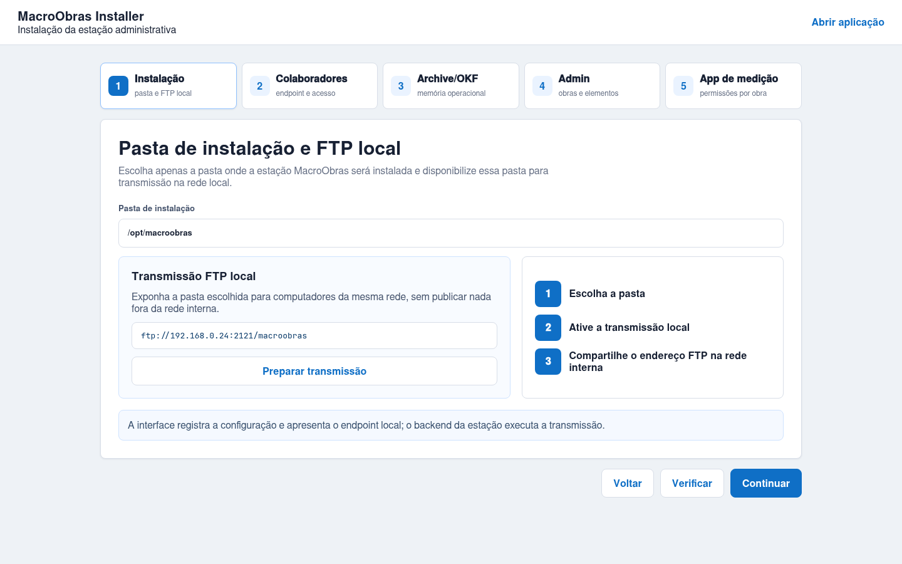
Gerado em 2026-07-10T01:14:10.354Z. Este HTML reune telas de avaliação, instalação e rotinas internas de uso.
Resultado atual: todas as rotinas passaram e possuem telas capturadas para revisão.
Telas de avaliação do wizard: pasta local, FTP, endpoint de colaboradores, Archive, OKF, Llama/gemma4eb e introduções de uso.
Validar pasta única de instalação e transmissão FTP local da pasta escolhida.

Apresentar endpoint de colaboradores e apontar visualmente sua funcionalidade.
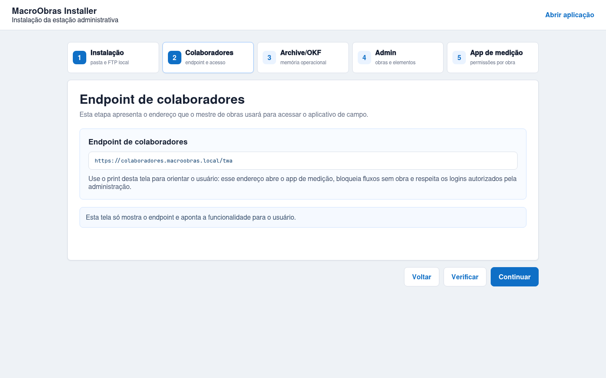
Introduzir Archive, OKF, servidor Llama local e modelo gemma4eb.
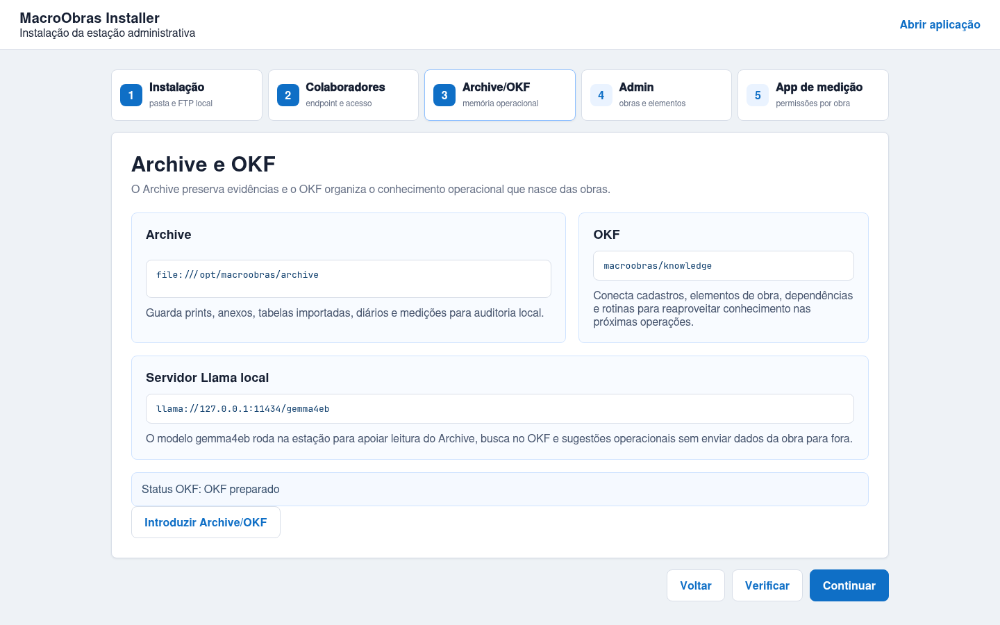
Introduzir uso administrativo e preparação do app de medição por email, CPF e obra.
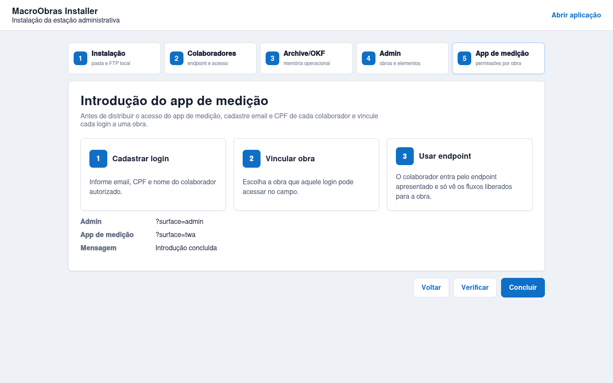
Telas internas de administração: obras, elementos de obra, acessos do app de medição, cronograma, medição e comparação da medição.
Cadastrar nome de obra e permitir importação de tabela de medição.
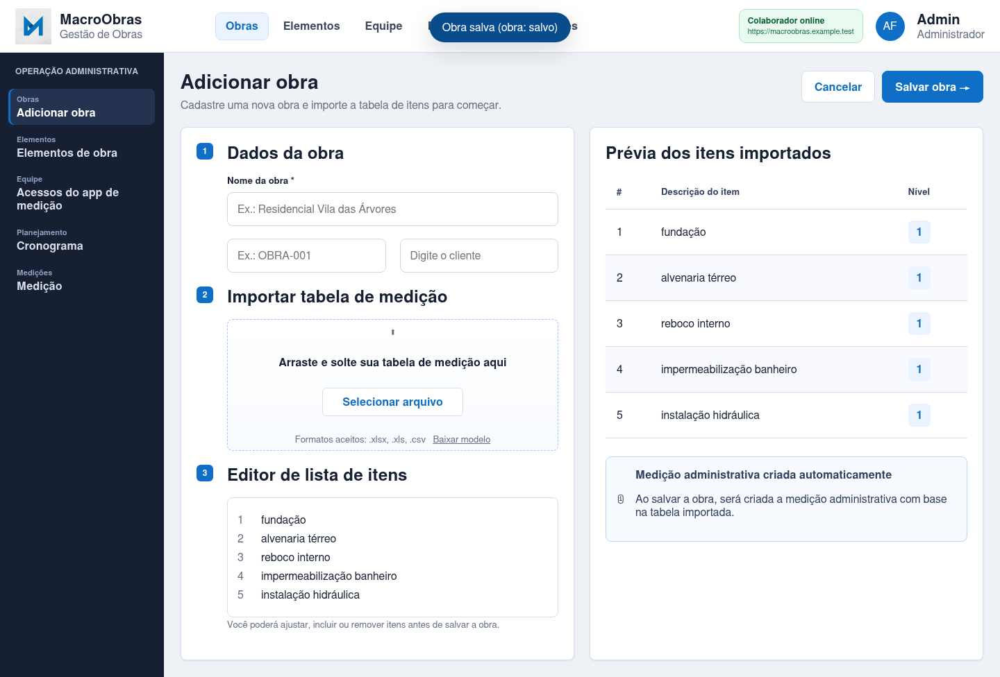
Adicionar elemento de obra com materiais, dependências e liberações em canvas.
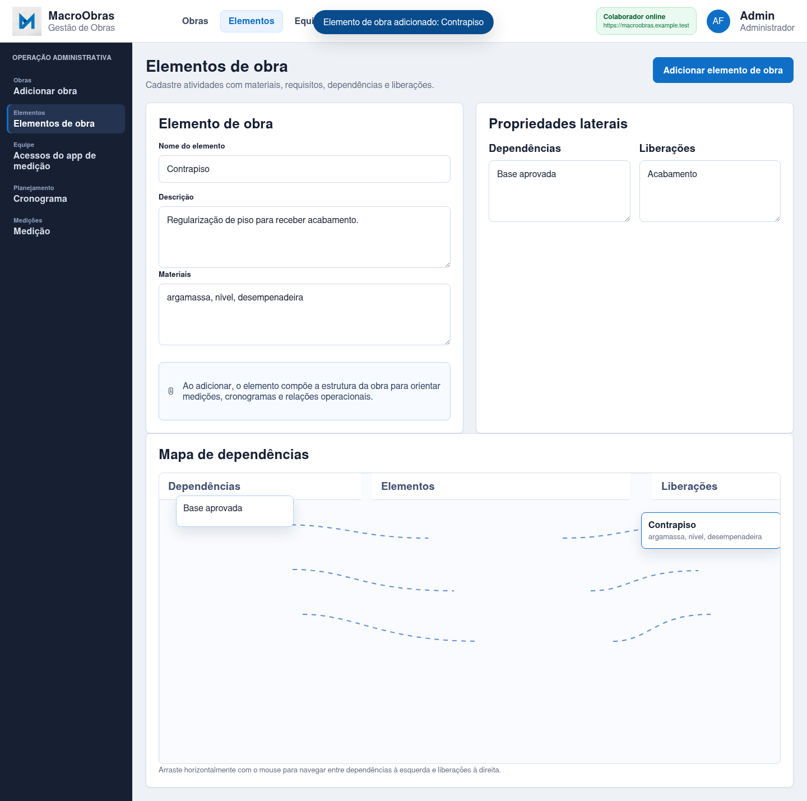
Cadastrar email e CPF de colaborador e vincular login do app de medição a uma obra.
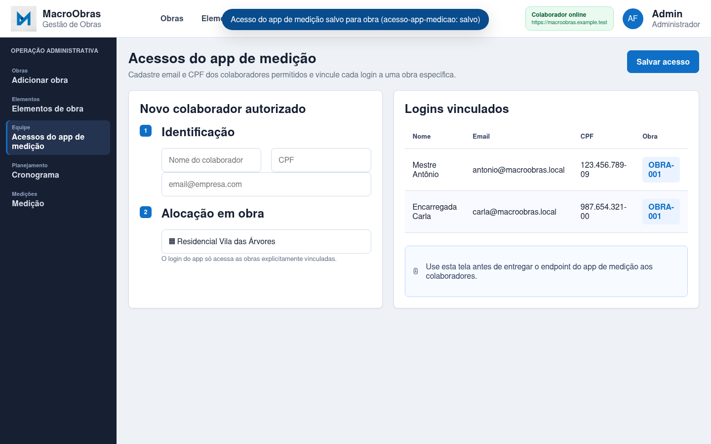
Navegar para cronograma e registrar novo agendamento.
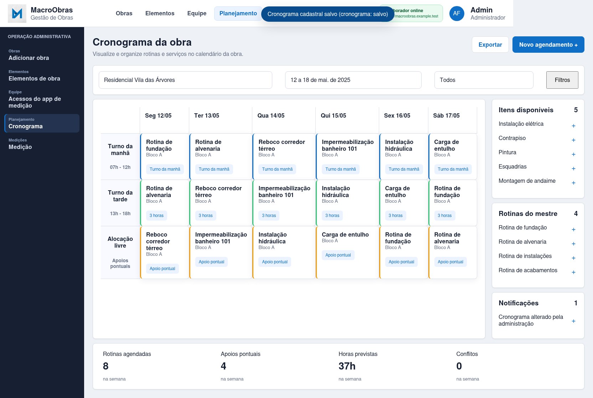
Aplicar progresso da medição com prova de serviço vinda do diário.
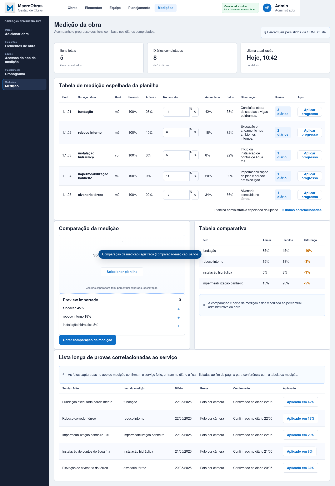
Gerar comparação da medição administrativa com a planilha importada.
Telas internas do colaborador: cadastro por email/CPF, vínculo de obra, bloqueios e execução de rotinas de campo.
Exigir email e CPF autorizados antes de liberar seleção de obra.
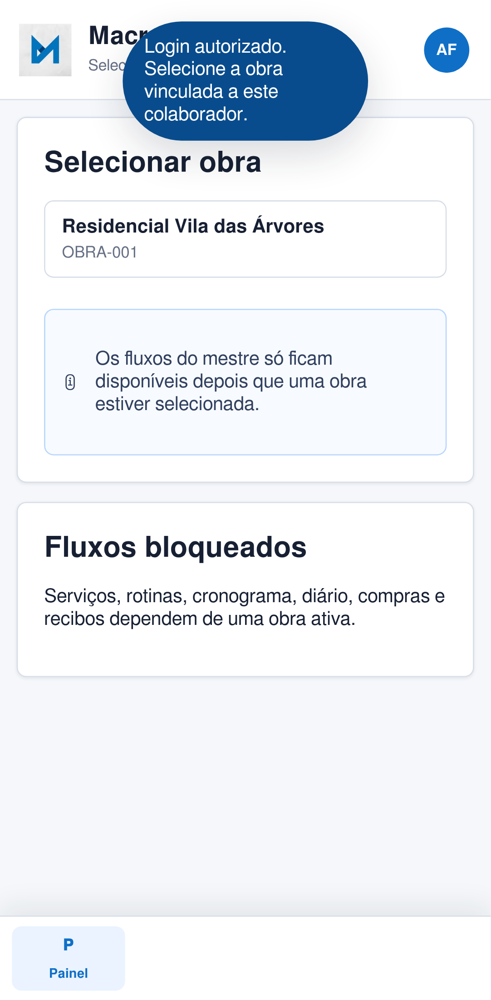
Garantir bloqueio dos fluxos antes da seleção de obra vinculada.

Selecionar obra vinculada e liberar rotinas do mestre.
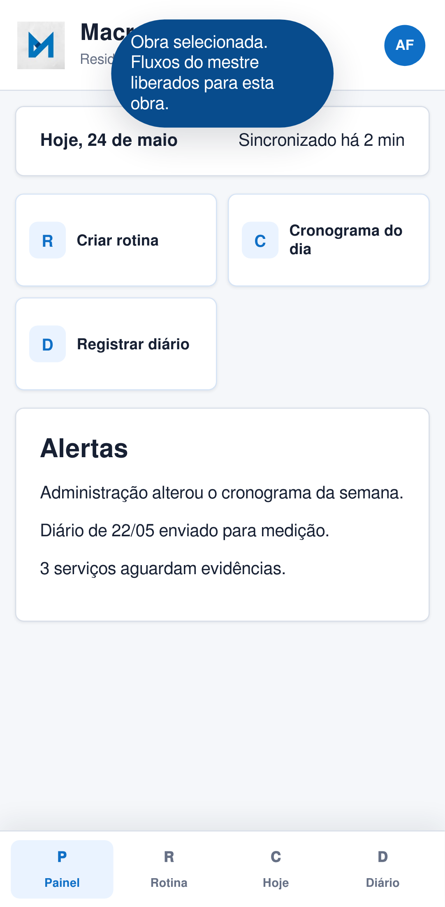
Criar rotina com servicos e observacoes.
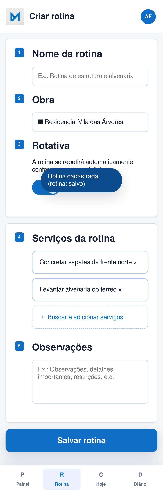
Expandir card do cronograma, navegar nas rotinas aplicadas do dia e executar CRUD.
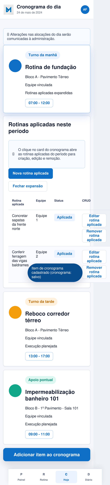
Confirmar serviço feito por câmera, anexar ao diário e enviar prova para medição.
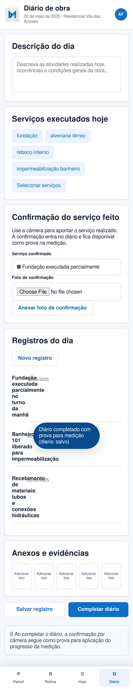